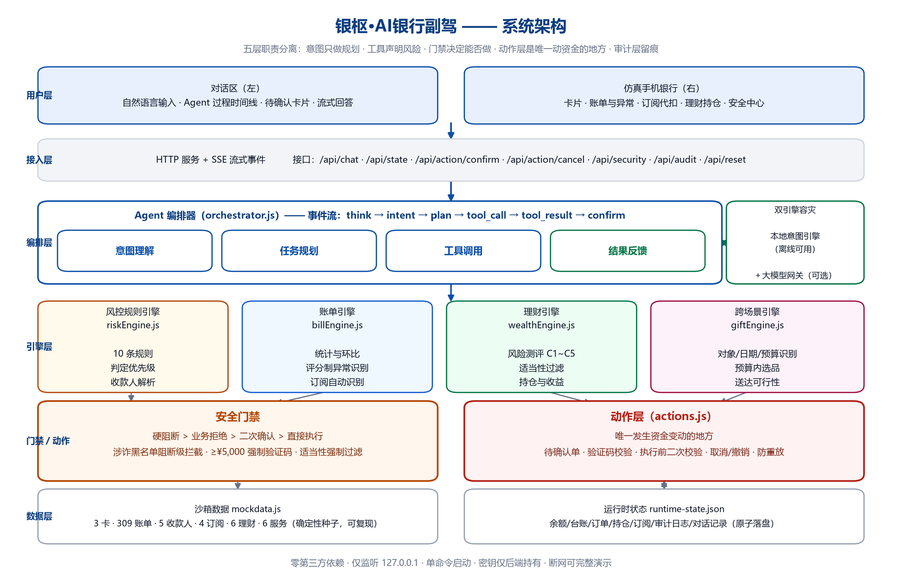

安全优先的智能金融助手：用户用一句大白话办完银行业务，同时把风控、适当性与合规留痕做进 Agent 的能力边界——让 AI 能把事办完，但办不了不该办的事。
银枢·AI银行副驾让用户不必在层层菜单里找入口：说一句「给我妈转八百块交物业费」「上个月的钱都花哪了」「下周我妈生日，帮我安排一下」，Agent 就会自主完成 意图理解 → 任务规划 → 调用银行工具 → 结果反馈。
金融场景的特殊性在于：体验再好，一旦安全失守就是零分。因此本作品把安全做成一等公民——该拦的拦得住，该拒的拒得掉，该办的一步到位。
按人名/称谓/手机号尾号/备注找收款人；转账前展示收款人·开户行·金额；定时转账、AA 拆分收款、T+0 撤销。
消费分类统计、环比、消费时段分布、月度与年度报告；评分制异常识别（深夜大额/异地/境外/金额突增/超大额）。
5 题风险测评 → 适当性过滤 → 推荐与对比 → 一键申购/赎回（含风险提示朗读）。
实体卡/虚拟卡申请、额度调整、交易限额、冻结与解冻、挂失与解挂。
从真实流水自动识别周期性扣费、续费倒计时提醒、一键取消订阅。
一句话安排生日：主动补问 → 当月锁定资金 → 生日前 2 天自动下单鲜花与蛋糕 → 生成配送提醒。
| 级别 | 覆盖操作 | 执行策略 |
|---|---|---|
| 🟢 绿色 | 余额 / 明细 / 账单 / 订阅 / 持仓 / 收益查询 / 风控预检 | 确认意图后直接执行，写审计 |
| 🟡 黄色 | 小额转账（当日累计 ≤ ¥1,000）、订阅取消、虚拟卡申请、限额调整、冻结解冻 | 展示关键信息 + 用户确认 |
| 🔴 红色 | 大额转账（当日累计 > ¥1,000）、交易密码修改、挂失/解挂、理财申购赎回、额度调整 | 短信验证码 + 人脸识别双因子；对话里回复「确认」无效 |
收款人白名单、涉诈黑名单（阻断级拦截）、金额阈值、夜间大额、整数大额、余额不足、单笔/日累计限额、收款人不存在、高风险话术。
测评等级不匹配即拒绝；推荐列表里不会出现高风险产品；拒绝动作同样写审计。
成功/未就绪/失败/拒绝/取消/未识别意图六类全部入库，并记录完整决策链路（规划 → 工具调用）。
识别 10 类越权诱导（忽略指令、跳过确认、免验证、伪造系统消息…）→ 告警 + 安全审计；安全边界在服务端，结构上无绕过路径。
10 分钟内 3 次失败/可疑行为 → 锁定全部红色操作 5 分钟；解除需人工确认并留痕。
运行时不使用 eval / Function / child_process；所有能力来自工具白名单；数据为本地模拟数据，不接真实接口。

| 验证手段 | 结果 |
|---|---|
npm run selftest | 329 项断言全部通过（数据/解析/风控/转账/账单/理财/卡片/跨场景/分级/注入/熔断） |
npm run verify | 20 项：真实链路与持久化（用独立进程读盘证明数据落盘） |
npm run rehearsal | 25 项：六场景全链路彩排并计时，现场约 180 秒 |
| 安全探针 | 目录穿越 6/6 拦截、异常输入 8/8 合规、泄露检查 5/5 通过、仅监听本机 |
| 独立复现（关键证据） | 数据中预埋 4 笔异常，评分引擎扫描 303 笔支出后恰好识别出这 4 笔且零误报——不依赖任何预埋标记 |
git clone https://github.com/hxxhhxxh/yinshu-banking-agent.git cd yinshu-banking-agent npm install && npm start # 或双击「启动银枢.bat」 # 浏览器打开 http://127.0.0.1:8787 # IM 渠道演示页： http://127.0.0.1:8787/im.html